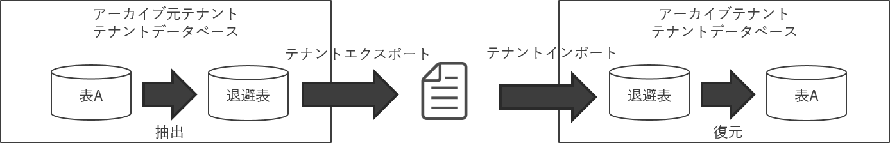

過年度アーカイブ方式¶


過年度アーカイブ方式¶
過年度アーカイブの流れ¶
過年度アーカイブは、テナント移送管理を利用し、アーカイブ用のテナントにデータを移送することでアーカイブを実現します。
過年度アーカイブには大きく４つのフェーズがあります。
データ抽出
アーカイブする対象データを退避表に抽出するフェーズです。
データ移送
テナント移送管理を利用して、アーカイブ元テナントからエクスポートし、アーカイブ先テナントへインポートするフェーズです。
データ復元
アーカイブ先テナントの退避表から、関連するテーブルへデータを投入するフェーズです。
データ削減
アーカイブ元テナントのデータを削減するフェーズです。
コラム
上記4フェーズを個々に動作させることができるため、Biz∫会計Ver.2と比較し、長時間にわたるリソースの占領が緩和されます。
パラメータ¶
下記メニューの対象モジュール：過年度アーカイブにて、過年度アーカイブ方式に関するパラメータを提供しています。
メニュー
会計コア マスタメンテナンス 基本設定管理 パラメータ管理
過年度保持年数¶
現在年度を含めずに保持したい年数を示す値です。
指定した年数以前の年度（2の場合、現在年度- 2の年度より前の年度）がアーカイブの対象となります。
添付ファイルの削除期限日更新¶
アーカイブ対象の仕訳・取引に紐づく添付ファイルの削除期限日を更新するかどうかを示す値です。
更新する設定とした場合、過年度アーカイブのデータ削除にて削除された仕訳・取引に紐づくファイル管理の削除期限日が更新され、ファイル管理クリーンアップ処理の対象となります。
アーカイブ対象年度¶
過年度保存年数より前の年度を指します。アーカイブ対象年度は、「現在年度－過年度保存年数－1」となります。データ抽出などで閾値として利用します。